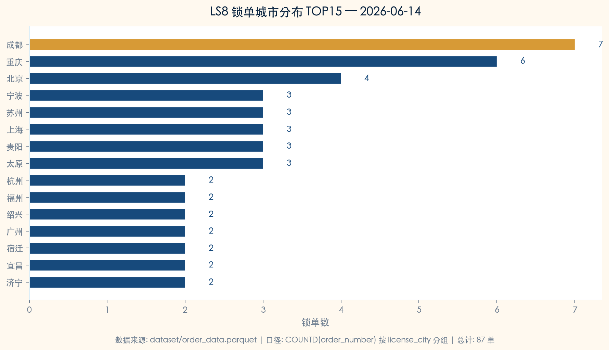

LS8 昨日锁单城市分布分析报告
数据日期：2026-06-14（周日） · 分析类型：经营分析 · 执行引擎：Agent Harness
LS8 总锁单数
87
2026-06-14
覆盖城市
52
全国范围
TOP1 城市
成都
7 单 · 8.0%
TOP3 集中度
20%
成都/重庆/北京
核心结论
- 2026-06-14 LS8 共计 87 单，覆盖 52+ 个城市，城市分布高度分散。
- TOP1 城市 成都 贡献 7 单（8.0%），无单一城市依赖。
- TOP3 城市（成都/重庆/北京）合计 17 单，集中度 19.5%，呈现多点开花格局。
- 尾部长尾效应明显：TOP10 之后城市占比超 40%，LS8 在全国市场具备广泛覆盖面。
城市分布 TOP20
| # | 城市 | 锁单数 | 占比 | 累计 |
|---|---|---|---|---|
| 1 | 成都 | 7 | 8.0% | 8.0% |
| 2 | 重庆 | 6 | 6.9% | 14.9% |
| 3 | 北京 | 4 | 4.6% | 19.5% |
| 4 | 宁波 | 3 | 3.4% | 23.0% |
| 5 | 苏州 | 3 | 3.4% | 26.4% |
| 6 | 上海 | 3 | 3.4% | 29.9% |
| 7 | 贵阳 | 3 | 3.4% | 33.3% |
| 8 | 太原 | 3 | 3.4% | 36.8% |
| 9 | 杭州 | 2 | 2.3% | 39.1% |
| 10 | 福州 | 2 | 2.3% | 41.4% |
| 11 | 绍兴 | 2 | 2.3% | 43.7% |
| 12 | 广州 | 2 | 2.3% | 46.0% |
| 13 | 宿迁 | 2 | 2.3% | 48.3% |
| 14 | 宜昌 | 2 | 2.3% | 50.6% |
| 15 | 济宁 | 2 | 2.3% | 52.9% |
| 16 | 南京 | 2 | 2.3% | 55.2% |
| 17 | 周口 | 2 | 2.3% | 57.5% |
| 18 | 厦门 | 2 | 2.3% | 59.8% |
| 19 | 兰州 | 2 | 2.3% | 62.1% |
| 20 | 滨州 | 1 | 1.1% | 63.2% |
| … | 其他 32 城市 | 32 | 36.8% | 100% |
城市分布图表

LS8 锁单城市分布 TOP15 — 2026-06-14
Agent 执行链路
| # | 动作 | 详情 | 状态 |
|---|---|---|---|
| 1 | Read AGENTS.md | Load project guide and workspace conventions | done |
| 2 | Inspect metric definitions | Confirm lock_count = COUNTD(order_number) where lock_time IS NOT NULL | done |
| 3 | Parse user intent | Intent: LS8 lock order city distribution → metric=lock_count, series=LS8, dimension=city | done |
| 4 | Resolve execution context | date=yesterday(2026-06-14), series=LS8, metric=lock_count, group_by=license_city | done |
| 5 | Execute analysis query | Read order_data.parquet → filter LS8 + yesterday → group by city | done |
| 5 | Query result: 87 LS8 lock orders across 52+ cities | done | done |
| 6 | Generate table asset | outputs/tables/ls8_city_distribution.csv | done |
| 7 | Generate chart asset | outputs/charts/ls8_city_distribution.png | done |
| 8 | Generate HTML report | outputs/reports/ls8_city_distribution_report.html | done |
生成资产
- outputs/tables/ls8_city_distribution.csv — 城市分布数据表
- outputs/charts/ls8_city_distribution.png — 城市分布条形图
- outputs/reports/ls8_city_distribution_report.html — 本报告
数据口径说明
| 数据源 | dataset/order_data.parquet |
| 时间窗口 | 2026-06-14 全天 |
| 筛选条件 | series = LS8 |
| 指标口径 | lock_count = COUNTD(order_number)，按 license_city 分组 |
| 执行脚本 | runtime_scripts/demo_ls8_city_distribution.py |
| 生成时间 | 2026-06-15 14:25:39 |